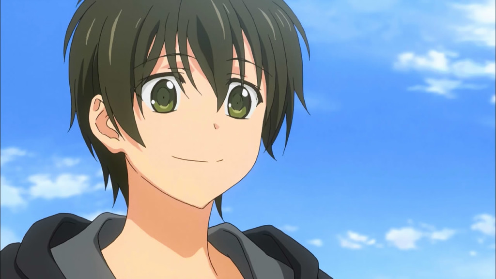
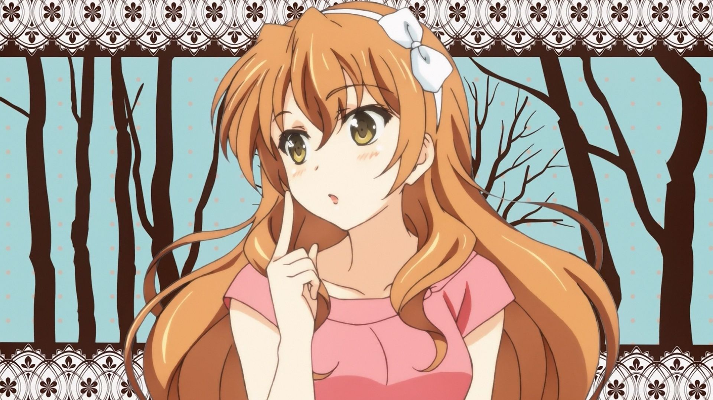
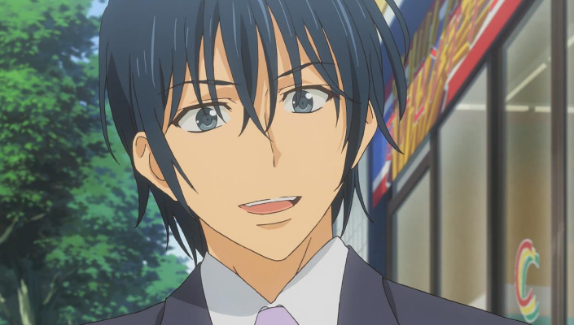
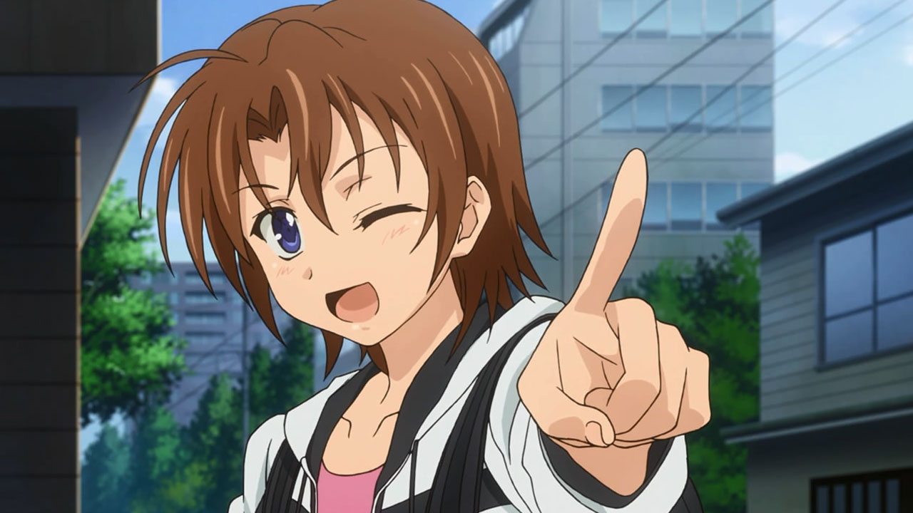
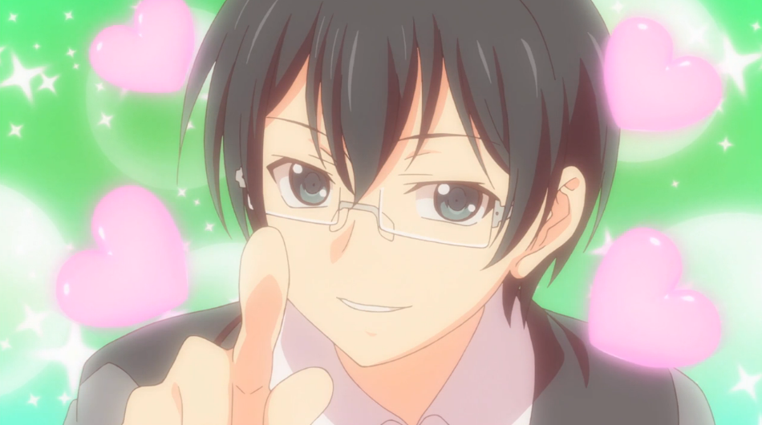
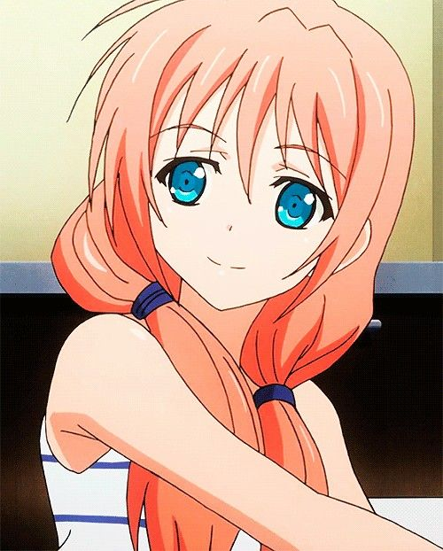
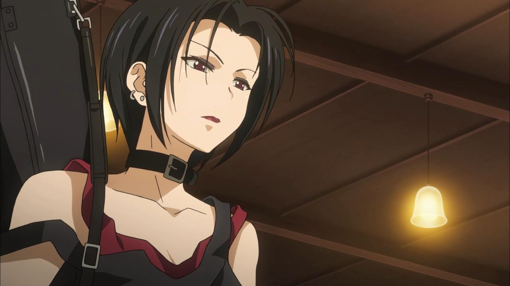
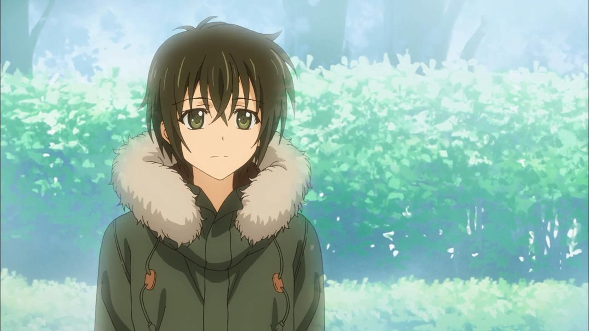

Golden Time (Tiempo dorado) es una serie de novelas ligeras japonesas escritas por Yuyuko Takemiya e ilustradas por Ēji Komatsu. Fue publicada por ASCII Media Works bajo su sello Dengeki Bunko, y se compiló en 11 volúmenes que fueron publicados del 10 de septiembre de 2010 al 8 de marzo de 2014. Se realizó una adaptación al anime, estrenada para la temporada de otoño de 2013 el día 3 de octubre y finalizada el 27 de marzo de 2014.
Tada Banri es un joven universitario que acude a Tokio con el objetivo de formar una nueva vida, cortando cualquier lazo de su pasado. Este cambio se debe a un accidente que sufrió al día siguiente de su graduación de la preparatoria, accidente que le provocó una terrible amnesia. En el desarrollo de su nueva vida se encontrará con nuevos amigos de universidad, entre los que destacará Koko Kaga y su antigua amiga de preparatoria Rinda Hayashida. Lo que aún desconoce Banri es que su antiguo yo tratará de tomar el control, provocando que los nuevos recuerdos sean sustituidos por los antiguos durante varios lapsos en su día a día, creando así una lucha interna contra él mismo y su "yo del pasado".
Voz por: Makoto Furukawa: Estudiante de primer año en una universidad privada. En sus años de colegio era el mejor amigo de Rinda, enamorándose de ella. Después de la ceremonia de graduación del colegio cayó de un puente cercano, producto de este accidente sufre de amnesia, olvidando todo lo que le había pasado hasta entonces. Viniendo de Shizuoka a Tokio, él vive solo en un apartamento. Al llegar a Tokio conoció a una hermosa chica llamada de la cual está totalmente enamorado como se muestra en la mayoría de los capítulos. Debido a que había perdido el examen de entrada y un año de estudios, ahora es un universitario novato de 19 años.
Voz por:Yui Horie Estudiante de primer año de jurisprudencia, tiene 18 años de edad. Cuidadosa de su apariencia, trata de verse como una dama perfecta, aunque en realidad es una mujer desconfiada y acosadora. Conoció a Mitsuo en su primer año de escuela primaria, con quien hizo una promesa de casarse. Desde entonces ha hecho planes para que todo saliera perfecto con su futuro en común con Mitsuo. Siguiéndolo a la misma universidad, acosó a Mitsuo sin parar, conociendo a Banri en el camino, con el cual (después del rechazo definitivo de Mitsuo) establece una relación. Posteriormente rechaza los sentimientos de Banri, pero luego los acepta. Sospecha que Banri sigue teniendo sentimientos por Rinda, como se puede apreciar en algunos capítulos, lo que la hace sentir molesta y triste.
Estudiante de primer año de jurisprudencia. Después de la ceremonia de apertura, se pierde en el campus, encontrándose con Banri en la misma situación. Banri le llamó "Yanas-san . Desde los días de la escuela primaria, estudiaba entre una escuela y otra, tratando de escapar de Kouko. Finalmente logra entrar a una universidad privada en Tokio a escondidas de ella pero su plan falla. Vive sin recibir nada de apoyo económico de sus padres. Aunque al inicio de la serie le gusta Chinami Oka, pierde el interés después de ser rechazado por ella. A pesar de sus desgracias amorosas, en los capítulos finales se aprecia porque quien ha desarrollado nuevamente sentimientos y tal parece ella le corresponderá como se puede apreciar en el último capítulo de la serie.
Es una estudiante de segundo año. Ella era la mejor amiga de Banri antes de su accidente y son de la misma edad (19 años), al inicio de la serie. A pesar de que al inicio mantiene oculto el secreto de los recuerdos del pasado de ella y Banri por miedo, realmente ella si se enamoró de él incluso fue a corresponder sus sentimientos cuando se citan en el puente pero el accidente le quitó su oportunidad. Eventualmente sufre el hecho de que la persona que ama no le recuerda, y aunque se ve muchas veces que los choques que tiene con Banri se los guarda para sí, Linda le anima a intentar arreglar las cosas entre ambos. Su nombre verdadero es Hayashida Nana (林田 奈々). Su apodo Linda es una lectura alternativa de su apellido Hayashida.
Su nombre verdadero es Takaya Satou. Participa forzadamente con Banri en las reuniones de los novatos del club de la "Ceremonia del Té". Se desespera con las mujeres reales, declarando que su vida son los personajes femeninos en 2D (de anime, manga y juegos). Desde entonces, ha sido su sueño encontrar la mujer perfecta, y cultivar sus amistades. Su apodo en el colegio era “Taka Satou”. A pesar de lo raro que puede ser a la hora de hacer algo por lo amistad y sus amigos no lo duda ni un momento como se puede apreciar en varios capítulos.
Una estudiante de baja estatura, miembro del club de cine. Mitsuo se enamoró de ella confesándole sus sentimientos, sin embargo ella los rechazó pues él se declaró en medio de una fiesta. Posteriormente se enamora de él aunque ya es tarde para ella.
Estudiante de tercer año. Líder de un grupo de rock, es de modales rudos. Es amiga de Linda y vecina de apartamento de Banri. A pesar de sus malos modales resulta ser de mucha ayuda en los conflictos amorosos que involucra a Banri, Rinda y Koko. Linda revela que no es ese su verdadero nombre. Tiene una gran similitud a "Nana Osaki", una de las protagonistas del manga NANA.
Es el espíritu de Banri. Posee sus memorias anteriores a su accidente. Sin que nadie le note, ha seguido a Banri y ha estado mirando todo lo que ocurre a su alrededor. Este es una figura importante en los recuerdos de Banri pero a la misma vez representa un problema, ya que le causa confusión a sus sentimientos y sobre todo conflictos entre los antiguos recuerdos y los nuevos recuerdos.
